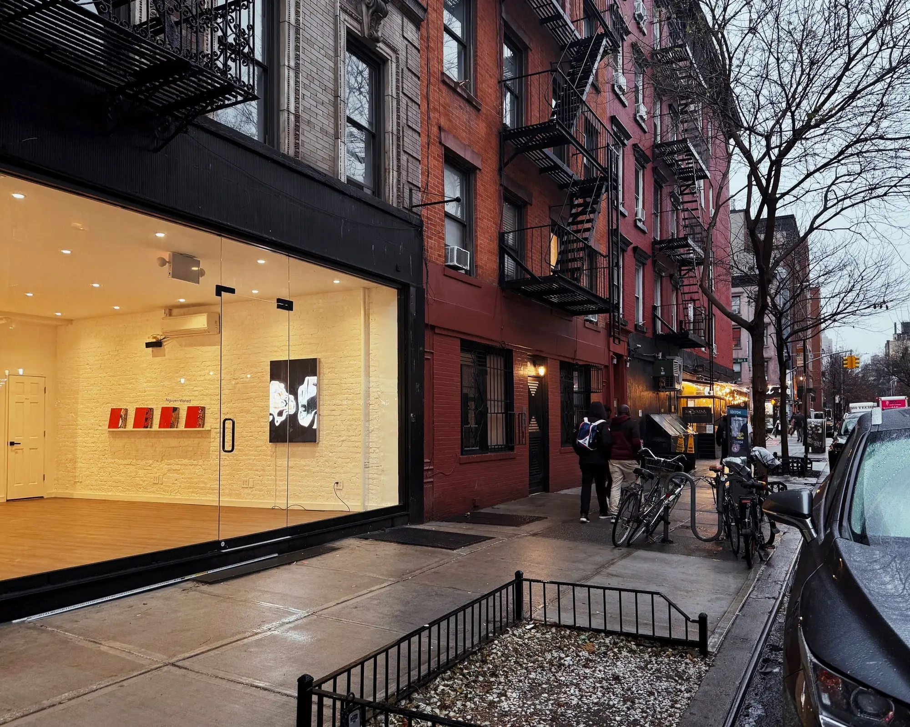
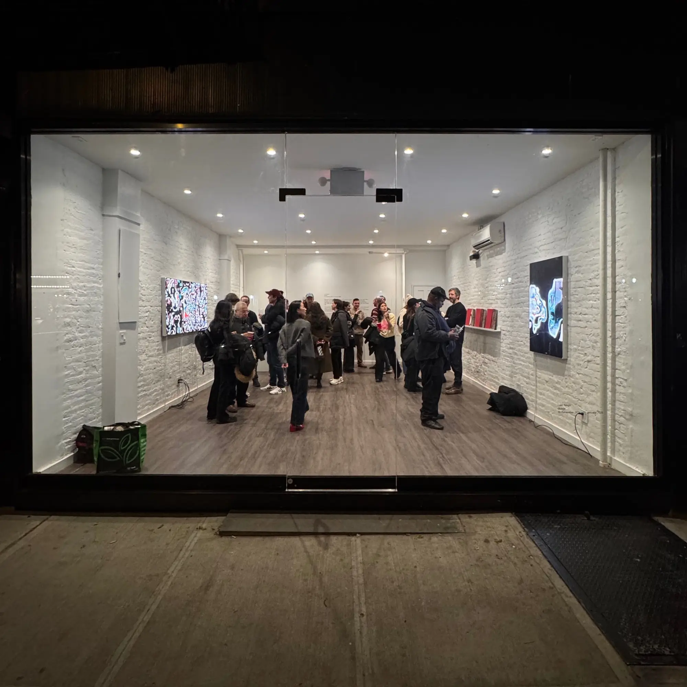
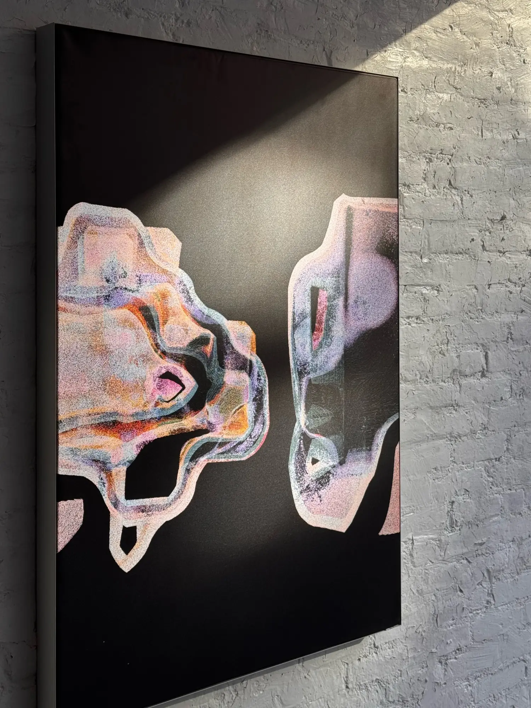
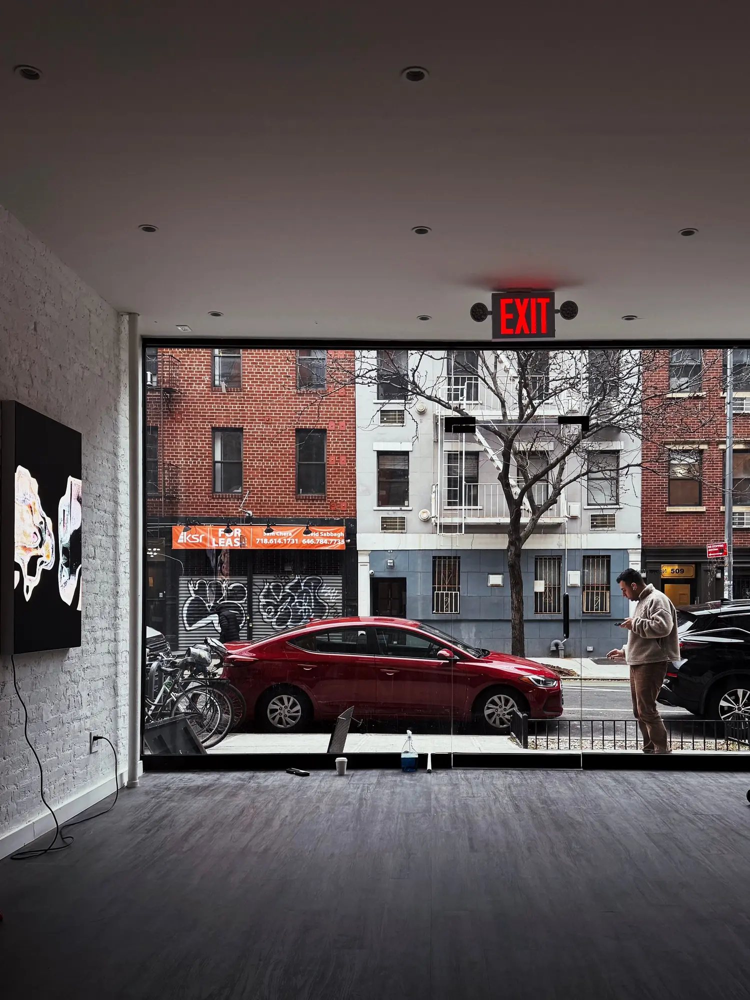
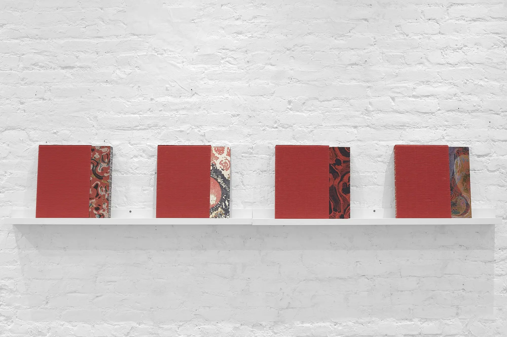
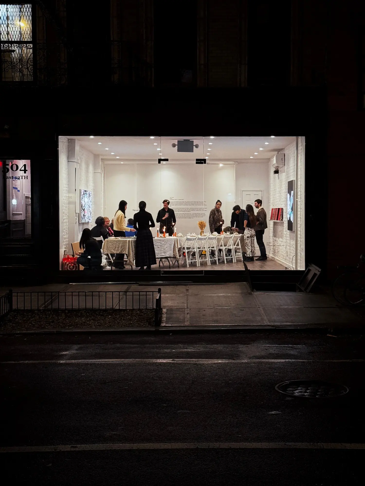

Solo exhibition in NewYork: "Last Tango" at Nguyen Wahed (NewYork)
Dec 2024
Held a solo exhibition, "Last Tango," at the Nguyen Wahed gallery in New York. The exhibition runs from December 15, 2024, to January 31, 2025. Also released the art book "MIMIZU" to coincide with this exhibition.
Exhibition: Last Tango
Venue: Nguyen Wahed (504 E 12th St, New York)
Duration: Dec 15, 2024 - Jan 31, 2025
Sales Platform: Highlight
URL:
https://nguyenwahed.com/exhibitions/11-last-tango-qubibi/overview/
https://privateviews.artlogic.net/2/2005bd64accb41bd110afe/
https://highlight.xyz/mint/ethereum:0x77846a4A4057779499c2b61576D3e73cDe63D25d
Special Thanks: Mimi Nguyen, Josh Yakov
---
Kazumasa Teshigawara's mimizu began with a peculiar moment: feeding meat paté into code. What emerged were not mere algorithms but undulating forms with an uncanny vitality, marking the beginning of a decade-long obsession. Known as qubibi, Teshigawara has spent years perfecting these digital organisms that seem to dance between states of being – never fully tamed, never entirely wild.
The exhibition presents the final iterations of mimizu – works that evolved from the artist's "hello world" algorithm yet depart radically from their origin. Each piece manifests as its own system of lines, oscillating between densely packed surfaces and sparse threads that, in qubibi's words, create "hills in the foreground and a night sky expanding in the distance." These works confound computational art's reputation for cold precision, instead achieving something remarkably close to consciousness. The exhibition marks the conclusion of the mimizu algorithm, as no further works will be generated from this system after this final showcase.
Central to the exhibition is the premiere of the mimizu book – a formidable 600-page volume that chronicles this evolving body of work. Each of the 90 limited editions features hand-crafted binding and one of four distinct covers, three of which showcase previously unreleased works. Housed in bespoke red sleeves, with afterword texts by Mimi Nguyen and Casey Reas, these volumes materialize a decade of digital experimentation into tangible form.
(Nguyen Wahed, 2024)
---





